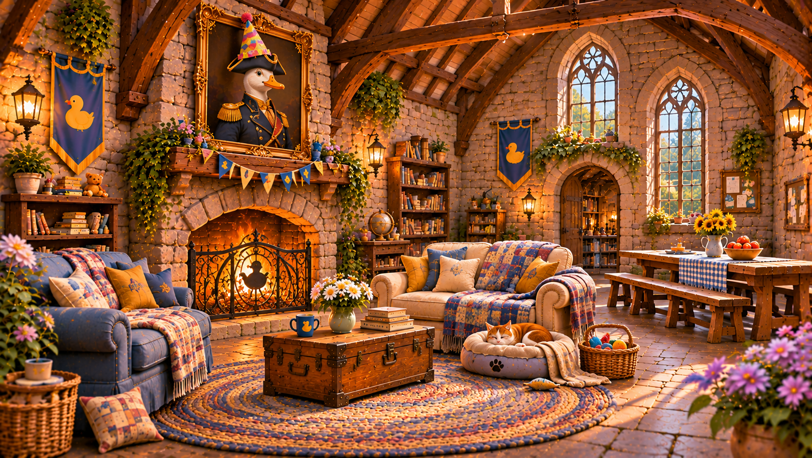

01
Begin outside
The Courtyard & Gardens
A place of flowers, old stone, a duck fountain, and benches designed for long conversations. The ancient fortress has never looked quite so welcoming.
The moat's lone rubber duck remains under observation.

The Cuddle Citadel
Three centuries of disputed military history. One very small stuffed duck. An elite security force that cannot say no to a hug.
For generations, the old stone fortress stood on the outskirts of Gnomeville, its ivy-covered battlements watching over a town that had largely forgotten why it was built.
When Deputy Assistant Quackers required protection, municipal officials recommissioned the stronghold. The towers were repaired, the drawbridge restored, and the former barracks assigned to the Navy Squeals.
Its original name and purpose remain unresolved. The archives offer competing accounts of hostile squirrels, a border dispute, and a catastrophic misunderstanding involving turnips.
Select a destination to wander the halls. All public rooms are marked. At least, all the rooms the Navy Squeals acknowledge.
Map approved for public circulation. No further architectural questions will be entertained.
Every room has a story. Some of them are even documented.
A place of flowers, old stone, a duck fountain, and benches designed for long conversations. The ancient fortress has never looked quite so welcoming.

Beyond the ancient arches: comfortable sofas, a warm hearth with a safety screen, a little bed for Milo, and an old commander's portrait whose paper party hat has somehow become permanent.

A starry blue blanket fort tucked into the old castle, filled with pillows, picture books, treasured friends, and one very important rainbow sippy cup.
Identical bunks. Impeccably ordered equipment. A modern command station built into a centuries-old fortress. The unit's operational priorities are beyond dispute.

A cloud-soft retreat for Derpy, Birthday Mouse, Honey Baby, Brittney, Liza Joy, and anyone who needs a little company. The board game is usually in progress. The pillow pile is never quite tidy.
Stone towers, arrow slits, creeping ivy, and sweeping views of Gnomeville. A defensive masterpiece, now also equipped for enthusiastic waving.
VIGILAMUS. PROTEGIMUS. NON DEFICIMUS.
We watch. We protect. We do not fail.
The Navy Squeals are the permanent protective force assigned to Fort Quackers. Their mandate is absolute. Their discipline is unquestioned. Their commitment to Deputy Assistant Quackers is without exception.
They maintain continuous surveillance, perimeter security, access control, and immediate-response readiness. Individual identities are subordinate to the unit. Personal distinction is neither sought nor recognized.
They do not abandon their posts. They do not fail.
SUBJECT: Deputy Assistant Quackers
MISSION: Protect at all costs
PRIMARY THREAT: Unauthorized drawbridge opening
COMPLICATION: Subject believes everybody deserves a hug
STATUS: Vigilant, indefinitely
“But what if somebody needs a hug?”
Handwritten annotation, attribution unconfirmed
A Navy Squeals sentry blocks your path. “State your business. This is a maximum-security installation.”
Choose your reason for visiting. Deputy Quackers has the final say.
Fictional interactive experience. No personal data is collected.
Visitors occasionally report a small, ancient door in parts of the fortress where no door was previously recorded.
Its location, destination, and even its existence remain unverified. The Navy Squeals maintain an active investigation. Quackers has declined to elaborate.
Some guests never need to ask permission.
Where Derpy goes, Birthday Mouse goes. No exceptions.
Always together. Brittney's earmuffs are approved protective equipment.
Unrestricted access. Her future friendship with Quackers is enthusiastically anticipated.
Standing policy: No mouse shall ever be separated from their designated bestie.
Comfortable clothes encouraged. Dinosaur pajamas are entirely respectable.
The Navy Squeals provide maximum security with minimum intimidation.
Be kind, share when possible, and never leave anyone out. Pizza diplomacy is encouraged.